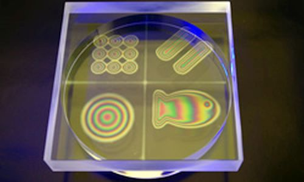
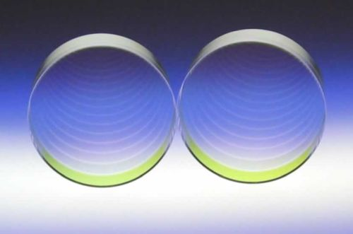
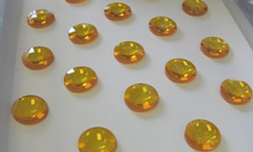

Company profile:
LightMachinery

LightMachinery
80 Colonnade Rd. North, Unit 1
Nepean, Ontario K2E 7L2
Canada
| Tel.: | +1 613 749 4895 |
| Website: | www.lightmachinery.com |
| Social media: |
Company Description
The people at LightMachinery are veterans of the laser and optics world. Each individual typically brings more than 20 years of experience in the areas of optical design, high power lasers, optical fabrication, laser systems, metrology, thin film coatings and custom machinery fabrication. We have produced components and equipment for customers throughout the world involved in space science, telecommunications, semiconductor, high power lasers, academic research, nondestructive testing, biophotonics, electronics, pharmaceutical manufacturing and materials processing.
LightMachinery has the following distributors:
- Raymax Lasers: Australia
- Hisky Technology Ltd: China
- MIT s.r.o.: Czech & Slovak Republics
- Spectropol: Poland
- Azpect Photonics: nordic Europe
- AMS Technologies: remainder of western Europe
- Specialise Instruments Marketing Co: India
- Beams Inc: Japan (Lasers)
- Indeco: Japan (optics and fluid jet polishing)
- Laser Spectronix: Korea
- Acexon: Singapore, Malaysia, Thailand, Philippines, Vietnam
- Superbin: Taiwan
Products
| Product | Description |
|---|---|
| CO2 lasers |  LightMachinery is the world's leading manufacturer of Transversely Excited Atmospheric Carbon Dioxide (TEA CO2) lasers. Our laser team pioneered the development of TEA CO2 laser technology and has been designing carbon dioxide lasers and laser marking and drilling systems for over 30 years. The LightMachinery IMPACT Series high power lasers are designed for 24/7 materials processing and drilling of non-metallic materials. These pulsed lasers are optimized for precision processing and drilling of non-metallic materials. The LightMachineary LaserMark Series is the ultimate in marking reliability, from beer labels and gelcaps to miniature electronics components. These lasers are designed for on-line marking and coding, creating perfect, crisp images on your products 24/7. |
| custom optics |  LightMachinery offers a wide range of custom optics. We work closely with our customers to really understand and define the parameters that are important to the functionality of the optical component. The experience of the people at LightMachinery with tight tolerance optics is unique in breadth and scope. If you are looking for high quality optics then look no further. Our team of professionals is always ready to push the envelope of optical quality or make a quick piece for an R & D prototype. No job is too big or too small. Start by filling out our contact form and telling us about your project and your requirements, we can help refine the specification and provide feedback on price and delivery. |
| etalons |  LightMachinery manufactures the world's finest solid and air spaced etalons. Our fluid jet polishing systems allow us to routinely create surfaces that are better than λ/100 peak to valley. Solid etalons, air spaced etalons, piezo tunable etalons, Gires–Tournois etalons – LightMachinery has extensive expertise in the manufacturing and testing of all kinds of Fabry–Pérot etalons from 1 mm square to 100 mm in diameter. These devices require high quality, very flat optical surfaces and extreme parallelism to achieve high performance, making them a good match for the polishing and metrology at LightMachinery. |
| excimer lasers |  LightMachinery excimer lasers now feature exciPure™ technology, introduced in 2016; exciPure represents the greatest improvement in excimer gas lifetime and reduction in operating costs in a generation. The IPEX-700 Seris is designed for medium duty cycle operation in industrial and R & D environments. These lasers deliver high power ultraviolet laser machining combined with state-of-the-art performance. They are ideal for applications such as pulsed laser deposition. The IPEX-800 series is designed for high duty cycle operation in a manufacturing environment. These lasers deliver high power ultraviolet laser machining combined with state-of-the-art performance. They offer long gas lifetimes, superior optical stability and precise control of laser operating parameters. Easy to use, simple to service and economical to operate, they combine the benefits of high precision excimer processing with the lowest total cost of ownership and highest uptime in the market today. |
| Fabry-Perot interferometers |  LightMachinery manufactures the world's finest solid and air spaced etalons. Our fluid jet polishing systems allow us to routinely create surfaces that are better than λ/100 peak to valley. Solid etalons, air spaced etalons, piezo tunable etalons, Gires–Tournois etalons – LightMachinery has extensive expertise in the manufacturing and testing of all kinds of Fabry–Pérot etalons from 1 mm square to 100 mm in diameter. These devices require high quality, very flat optical surfaces and extreme parallelism to achieve high performance, making them a good match for the polishing and metrology at LightMachinery. |
| Gires-Tournois interferometers |  LightMachinery has a great breadth of expertise for manufacturing even space qualified interferometers, including Gires–Tournois interferomters. Polarizing, non-polarizing, cemented, optically contacted (epoxy free bonded), hexagonal, square, small (1 mm), large (45 mm), UV, visible, IR. Material selection, coating design, modeling of phase & polarization, mechanical design, process development, quality planning, glass shaping and polishing, optical contacting, cementing and finally testing, testing and testing. Of course that's what makes it so interesting and challenging to work on these projects. |
| infrared optics |  LightMachinery has extensive expertise in the manufacturing and testing of zinc selenide, zinc sulfide and germanium optics for CO2 lasers, e.g. in the form of mirrors, lenses and rhomb retarders. In addition, we have a thorough understanding of the importance of high damage threshold coatings for our laser customers. |
| interferometers | LightMachinery has a great breadth of expertise for manufacturing space qualified, wide-field Michelson interferometers. Polarizing, non-polarizing, cemented, optically contacted (epoxy free bonded), hexagonal, square, small (1 mm), large (45 mm), UV, visible, IR. Material selection, coating design, modeling of phase & polarization, mechanical design, process development, quality planning, glass shaping and polishing, optical contacting, cementing and finally testing, testing and testing. Of course that's what makes it so interesting and challenging to work on these projects. |
| spectrometers |  LightMachinery's spectrometers are setting the new standard for range, resolution, cost and size. The HyperFine spectrometer is designed for LIBS or simultaneous Brillouin and Raman spectroscopy. With 1 pm resolution in a small package size it offers an affordable approach to advanced spectroscopic applications. The Hornet Spectrometer is a smaller version with about 25-pm resolution anywhere in the UV, visible and NIR wavelength ranges. The Hornet is ideal for characterizing light sources such as laser spectra in real time. |
| ultraviolet lasers | LightMachinery excimer lasers are powerful and reliable sources for ultraviolet light. They now feature exciPure™ technology, introduced in 2016; exciPure represents the greatest improvement in excimer gas lifetime and reduction in operating costs in a generation. The IPEX-700 Seris is designed for medium duty cycle operation in industrial and R & D environments. These lasers deliver high power ultraviolet laser machining combined with state-of-the-art performance. They are ideal for applications such as pulsed laser deposition. The IPEX-800 series is designed for high duty cycle operation in a manufacturing environment. These lasers deliver high power ultraviolet laser machining combined with state-of-the-art performance. They offer long gas lifetimes, superior optical stability and precise control of laser operating parameters. Easy to use, simple to service and economical to operate, they combine the benefits of high precision excimer processing with the lowest total cost of ownership and highest uptime in the market today. |
| micro-optics | |
| pulsed lasers |
Information of LightMachinery Appears on the Following Pages
Company profile (this page)
Pages with Suppliers for Products
CO2 lasers, custom optics, etalons, excimer lasers, Fabry-Perot interferometers, Gires-Tournois interferometers, infrared optics, interferometers, micro-optics, pulsed lasers, spectrometers, ultraviolet lasers
Encyclopedia Articles
CO2 lasers, etalons, excimer lasers, Fabry-Perot interferometers, Gires-Tournois interferometers, interferometers, spectrometers, ultraviolet lasers
Profiles of Other Suppliers
LightMachinery is shown as alternative supplier on 229 pages of other suppliers not having an ad package.
Other Pages
On various pages, a banner can randomly show up which displays a random selection of logos of suppliers with an ad package.